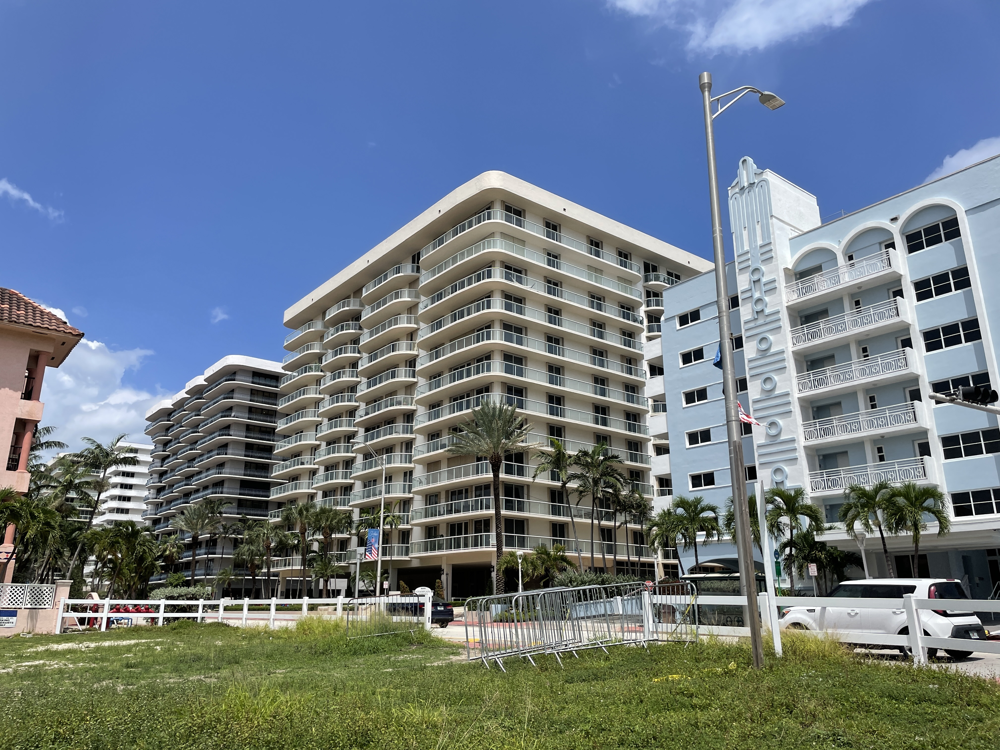
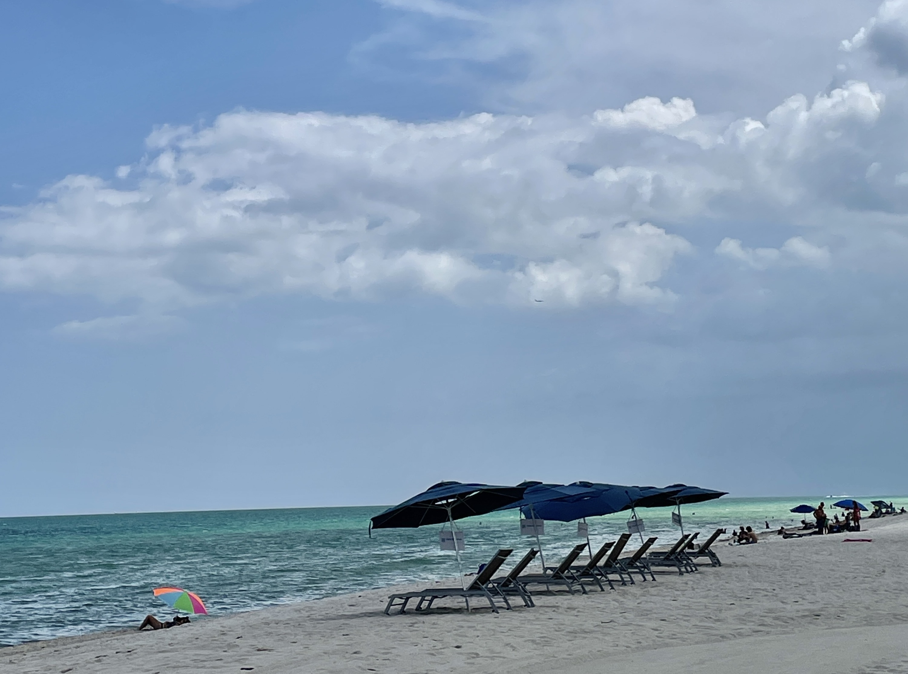

There is less awareness about how the city is coping now after what happened nearly 3 months ago. Despite the physical beauty of the area being nearly restored, the emotional impact of the collapse remains on many residents'minds.
Evguenia Voitenko, a one year resident of Champlain Towers North is originally from France. Champlain Towers North is the sister building of the fallen condo, and Voitenko said she took a much-needed break right after the collapse.
“At first, I was so scared that I just went back to France.” Voitenko's housekeeper was also afraid. “I called her to come but she was still freaked out and kept saying no, no, no, even 2 weeks after the collapse.” said Voitenko.
However, when asked how she feels after nearly three months, Voitenko showed her unflappability and said, “I feel secure because, after the collapse, those engineers from New York City were sent to our place to check out everything, going through all the testing.” Voitenko was told the North building passed the structure check when she finally chose to go back to Surfside.
“Honestly, I don't want to move, not just because I've been living here only for one year, but also this is a beautifully designed building, isn't it?”
Champlain Towers North, a sister building to Champlain Towers South is on the left side of Champlain Towers East (in the middle). By Eve Lu
It is understandable that people can't easily just give up an oceanfront place where they can enjoy the sea whenever they wake up, but Voitenko also added, “I will probably move 2 years later.”
Gabriel Jiménez, 21 years old, who comes from Venezuela, also is a resident from the sister building. He wasn't in the sister building when the collapse happened.
Jiménez said, “I heard the news in the morning, and we couldn't come over here. Everything was closed.”
Months later, when Jiménez is asked whether he is scared living here, he said, “Of course, everyone will think twice about it because it just happened recently in the same place. But I don't think there's any danger.”
Jiménez wouldn't mind staying there because he says that he wasn't a long-term resident there. However, the concern will not just pass from sight itself.
Days right after the building collapsed, Surfside Mayor Charles Burkett said resources would be available to people living in the North tower if they wanted to evacuate the building. Also, residents of Champlain Towers North were given the option to stay or to move to alternative housing. But the point is the alternative housing option seems to be less familiar with people who literally live and work here.
Jiménez said he never heard about the option before and a security guard from the North tower also confirmed that, “People are indeed scared living here, but they are also coming back.” The guard, a 55-year-old Peruvian American, had also never heard about the option of moving out given by the local government.
As for the security guard, he said he wasn't scared right now but might change his job some day in the future.
This raises a new question: Did the alternative housing truly exist, or was it just an empty promise made by the local government?
A resident of the Champlain Towers North who wished to remain anonymous who was originally from Argentina and is now living in the North building. What she said leads to a further quest.
“After the collapse, we did have a meeting with all residents here. They gave us leaflets and told us to write down our main concerns. From what I knew, many people indeed moved away. Some went to stay with their family, and others went to hotels.”
She mentioned that hotels along Collins Avenue might be the possible alternative housing but that was only based on her guessing because after the collapse, she chose to go to her daughter's place instead of seeking temporary housing herself.
Along Collins Avenue, there are a few hotels. A bartender from the Four Seasons Hotel along the street said there weren't many people coming there, but most of them went to Grand Beach Hotel Surfside in the days right after the building collapsed.
However, according to the concierge staff at Grand Beach Hotel Surfside, it turns out that this place only plays a role in re-connection for those who were looking for families after the building came down. “I don't even know if it was an official shelter signed by the local government.” said two of the staff members.

Grand Beach Hotel Surfside on Collins Avenue. By Eve Lu
During a Saturday afternoon at the beach, we spoke to Madhavi Caceres, a 26 year resident of Miami. Caceres is a yoga instructor and natural healer who knew and taught several people that lived in the Champlain Towers South.
In the weeks following the condo collapse Caceres offered up her five car driveway as a place for news crews to set their tents to be stationed close to the collapse site. Her house is located on Harding Ave., an incredibly close location that allowed Caceres to witness the clean up and media frenzy afterwards.
When asked about the alternative housing and assistance Caceres was skeptical. “That's only the media. They didn't help so much. Before they give every penny to you, you have to prove yourself. But some people had nothing to prove. I know there was an elderly lady that came down when she heard the collapse, she just put on her robe and got out.”
Claims of an alternative housing option were not completely unfounded, as one man who requested to remain anonymous confirmed that he moved into the temporary housing provided after the collapse.
When asked whether the government had offered an option to stay or move out, the man, who lived in the sister building, confirmed that there was indeed an alternative housing place and he and his family moved in.
“It was great, and it was more like an apartment than a hotel.” But he refused to provide any further details about the place. “Generally speaking, it's close to Miami but in the neighboring city.” The man also pointed out that the place was a private donation, which means neither he nor the government had to pay for the housing.
Despite the shocking collapse and unanswered questions, the man, and many other Surfside residents are trying their best to move forward.
The resident of the sister building said “I spent one month with my kids there and came back later because summer was over, and their school was back in session.”
He said he had been living here for a few years and he also feels pretty safe right now. “It's a cute and sleepy town and also a very good community for kids, so I don't see myself leaving in the future.”
Three months later, people still enjoy the sunshine on the Surfside Beach. By Eve Lu
Andrew Hyatt, the town manager of Surfside, via email confirmed the information that was given by the residents from the sister building.
Hyatt said, “I do have information concerning the private donation. Any housing provided was done through Red Cross and supportsurfside.org.”
When asked how residents could find out more about alternative housing, Hyatt thought at this time, there is no need for alternative housing. However, he also added that if there had been any needed housing, Red Cross would be responsible for the arrangement after the collapse.
After such a horrible tragedy, one might think that residents would want to leave and stay as far away as they can. However, many are choosing to stay based on a number of factors. Relocating can be expensive and time consuming, and many people have invested large amounts of resources in creating their homes in Surfside. Further, most of these oceanfront buildings along the beach are luxury properties, each one potentially worth tens of million. The potential alternative housing could only be a makeshift home, and would never be the equivalent to their original luxurious condominium.